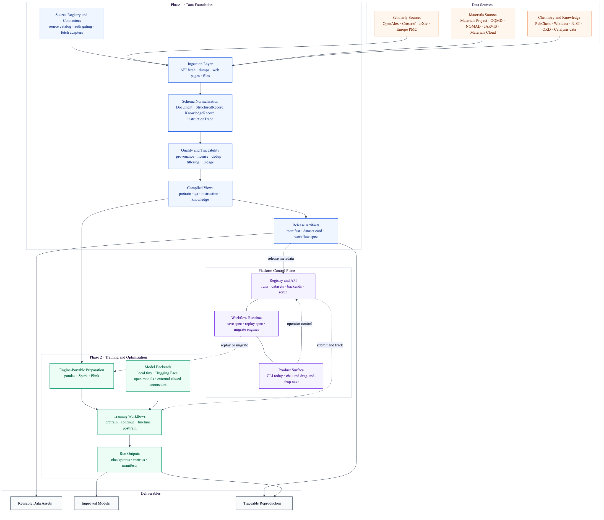

From scratch
Build high-quality corpora and structured records for fresh model training.
Lattice is a platform for collecting, processing, and using high-quality training data across the full large-model lifecycle.
The product should not stop at data curation. It should let users move from data to model improvement in one system.
Build high-quality corpora and structured records for fresh model training.
Continue training a base model on new scientific or domain-specific data.
Turn compiled views into QA, instruction, and task-specific supervision.
Bring safety, alignment, and preference optimization into the same platform story.
The intended experience is block-based and low-friction, not expert-only infrastructure.
Use natural language to specify sources, tasks, and model goals.
Snap source, filter, compile, and training stages into one executable flow.
Turn complex pipelines into reusable modules that can be shared and repeated.
Develop locally, validate the chain, then expand across execution engines.
Lattice already has executable proof points in the repository today.
A public-source batch is fetched from OpenAlex, arXiv, and PubChem and compiled into reusable training views.
Phase 1 builds the data foundation. Phase 2 turns that foundation into a full training and optimization product layer.
